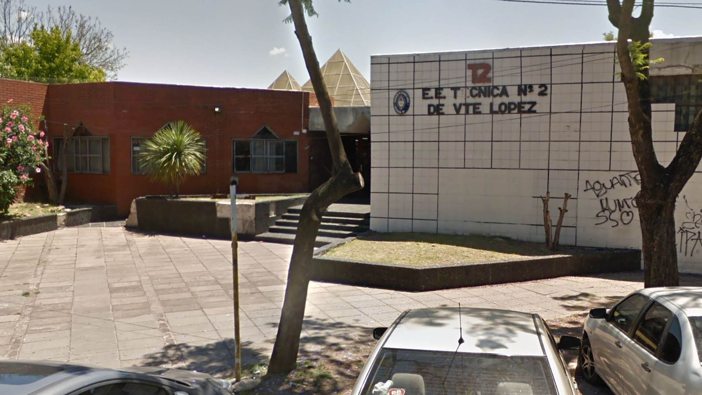

Orientaciones
Tecnico en Informatica
En la carrera de tecnico en informatica se van a ver todas cosas relacionadas a esta, desde los inicios de la programacion hasta todas las partes de una pc es una aventura por los caminos de la informatica donde se podra aprender un moton de cosas
Todo lo que vas a ver en esta materia:
Investigacion operativa
Aprenderas métodos analíticos avanzados para tomar mejores decisiones
Programacion
Aprenderas desde programacion basica hasta un nivel avanzado
Hardware
Aprenderas todas las partes que compone una PC y como se relacionan entre ellas.
Sistemas operativos
Aprenderas sobre todos los tipos de sistemas operativos, como funcionan y la historia de estos.
Ciberseguridad
Aprenderas como funciona los metodos de defensa para la informatica, como funcionan, antivirus y virus, como son los protocolos y cosas a tener en cuenta cuando un Ciber ataque es llevado acabo.
Maestro Mayor
En la carrera de mastro mayor de obras vas a poder ver cosas relacionadas a esta, desde como armar planos y maquetas de trabajo hasta poder llevar a cabo proyectos en grupos para futuras construcciones.
Todo lo que vas a ver en esta materia:
Sistemas Constructivos
En esta materia van a estudiar el conjunto de elementos técnicos, procedimientos, equipamientos, materiales y herramientas para distintos tipos de construcciones arquitectónicas.
Proyecto de Instalaciones
En esta materia van a estudiar un conjunto de documentación descriptiva necesaria que se desarrolla para la realización de distintas instalaciones de servicios en una construcción.
Estructuras
En esta materia van a aprender un conjunto de elemento resistente de una construccion con la finalidad de soportar cargas y trasmiltirlas donde se emplean calculos matematicos para el dimisionamiento de las misma.
Instalaciones Sanitarias y de gas
En esta materia van a estudiar el diseño, calculo y dimensionamiento de redes de gas y sanitarias en una construcción.
Dirección y Ejecución de las instalaciones
En esta materia van a aprender el estudio que capacita al futuro profesional para el control durante la ejecución de distintas instalaciones en una construcción.
Historia de la Escuela
El origen de nuestra escuela se encuentra en la década de 1970 en los cursos de formación profesional de esa época. El curso de dibujo técnico dio lugar a las carreras de técnico-constructor y maestro mayor de obras a partir de la demanda de alumnos trabajadores de la construcción. En 1987 se produjo por primera vez en turno diurno, la apertura del primer curso de ler. Año del ciclo Básico técnico, dando lugar al desdoblamiento de la escuela de educación Media N* 5, creándose la escuela de educación Técnica N* 2 de Vicente López el día 12 de mayo de 1987, en que efectivamente se nombraron autoridades, se desprendieron los planteles, los cursos y los bienes. Y efectivamente a partir de allí, la Escuela Técnica N* 2 de Vicente López comenzó a construir su identidad, su estilo, su edificio propio, su convivencia y sus vínculos.
En 1999 los docentes liderados por el equipo directivo comenzaron la transformación educativa en los polimodales de MMO y la apertura del Bachillerato de Adultos Tecnológico. En el año 2002 respondiendo a las nuevas demandas regionales enfrentamos un nuevo desafío abriendo la carrera de Técnica en Informática Personal y Profesional. En el año 2007 y al amparo de la nueva Ley Nacional de Educación Técnica se abrió el camino que hoy transitamos de los 7 años para obtener las tecnicaturas de Maestro Mayor de Obra y de Informática.
Tambien como menciones honorificas tenemos en el 2019 MMO Mención Especial por la Cámara Empresaria de Vicente López y tambien el mimo año, Informática ganador del 1er puesto en Olimpiadas Nacionales
¿Que hay de nuevo por la Tecnica 2?
Tecnico Informatico
En la carrera de tecnico en informatica se van a ver todas cosas relacionadas a esta, desde los inicios de la programacion hasta todas las partes de una pc es una aventura por los caminos de la informatica donde se podra aprender un moton de cosas.
Todo lo que vas a ver en esta materia:
Investigacion operativa
En esta materia van a aprender a como poder organizarse y sacar la mayor efectividad de cada uno de sus proyectos
Programacion
En esta materia van a aprender los fundamentos basicos para aprender a programar, empezando con DfD, pasando por visual y llegando a lenguajes como Python, Html, css y mucho mas!
Hardware
En esta materia van a aprender todas las partes que compone una PC y como se relacionan entre ellas.
Sistemas operativos
En esta materia van a aprender sobre todos los tipos de sistemas operativos, como funcionan y la historia de estos.
Ciberseguridad
En esta materia van a aprender como funciona los metodos de defensa para la informatica, como funcionan, antivirus y virus, como son los protocolos y cosas a tener en cuenta cuando un Ciber ataque es llevado acabo.
Todo lo que vas a ver en esta materia:
Sistemas Constructivos
En esta materia van a estudiar el conjunto de elementos técnicos, procedimientos, equipamientos, materiales y herramientas para distintos tipos de construcciones arquitectónicas.
Proyecto
En esta materia van a aprender el conjunto de documentos mediante la cual se define el diseño y desarrollo de trabajos de arquitectura e ingeniería.
Proyecto de Instalaciones
En esta materia van a estudiar un conjunto de documentación descriptiva necesaria que se desarrolla para la realización de distintas instalaciones de servicios en una construcción.
Estructuras
En esta materia van a aprender un conjunto de elemento resistente de una construccion con la finalidad de soportar cargas y trasmiltirlas donde se emplean calculos matematicos para el dimisionamiento de las misma.
Instalaciones Sanitarias y de gas
En esta materia van a estudiar el diseño, calculo y dimensionamiento de redes de gas y sanitarias en una construcción.
Dirección y Ejecución de las instalaciones
En esta materia van a aprender el estudio que capacita al futuro profesional para el control durante la ejecución de distintas instalaciones en una construcción.